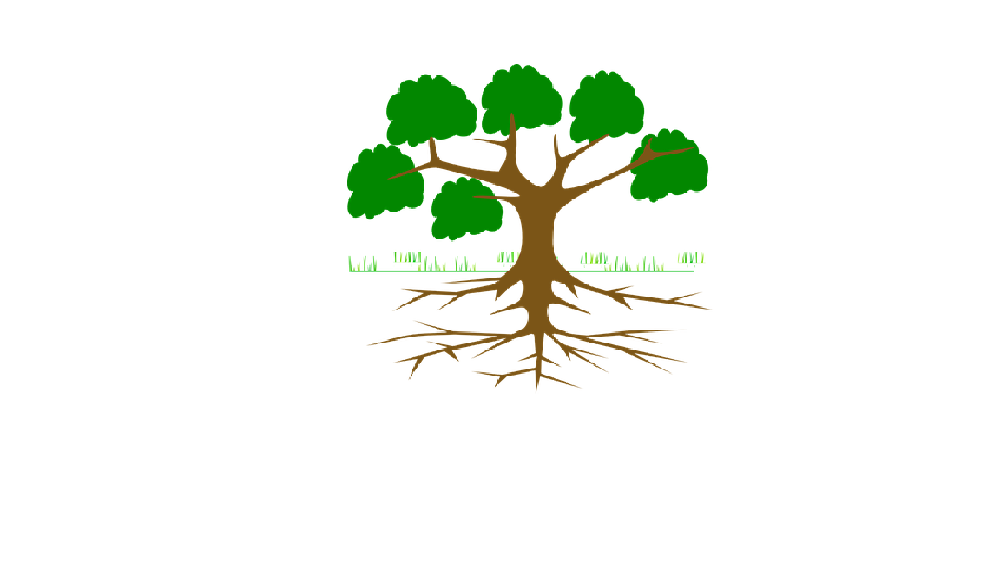

GUÍA INTERACTIVA PARA BIBLIOTECAS ESCOLARES
Unidad 1 – Actividades.
Actividad 1
Realice una presentación en Power Point en la que se describa en cuanto a: aspectos físicos y emocionales y otras características que considere necesario. Puede utilizar fotos, imágenes, entre otros, para su propia descripción. Exponga su trabajo al resto del grupo.
Actividad 2. Pregunta de Selección Múltiple
Solución
Solución
Solución
Actividad 3
En la imagen que se presenta a continuación incluya dentro de las ramas las metas o valores que desea cumplir a futuro y en las raíces los valores o acciones que debe realizar para cumplir sus metas. Para ello pídale a su docente ayuda para realizar la actividad en Paint 3 D (Clic derecho sobre la imagen, copiar imagen, abrir Paint 3 D y pegar imagen para realizar el ejercicio).

Obra publicada con Licencia Creative Commons Reconocimiento No comercial Compartir igual 4.0